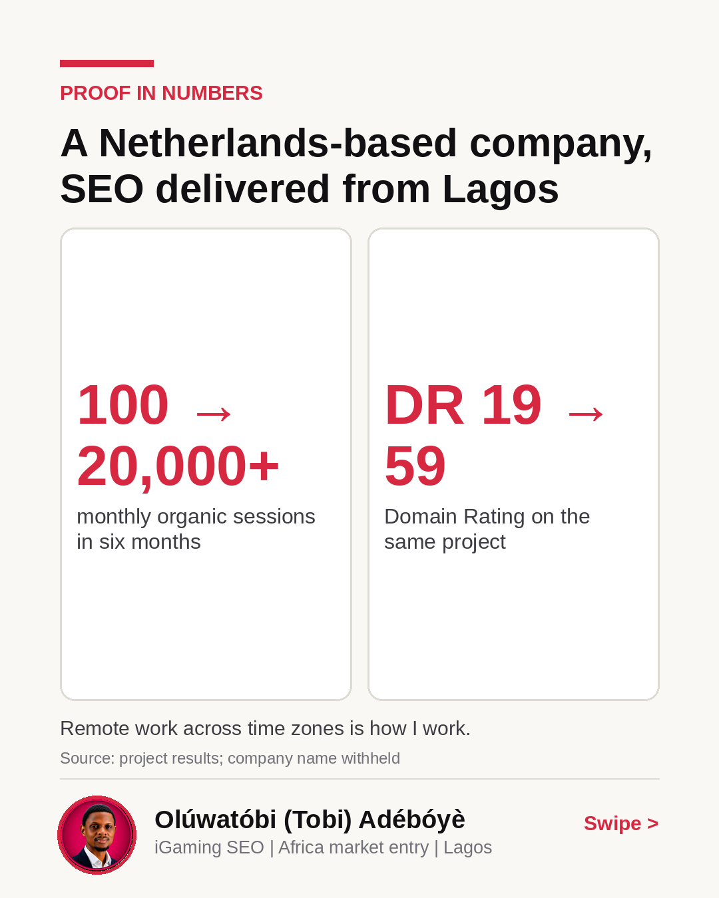
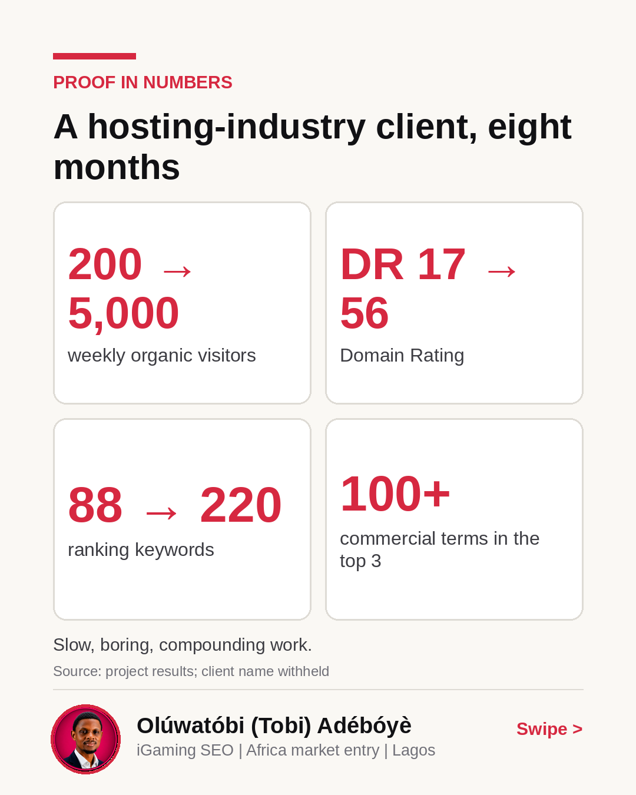
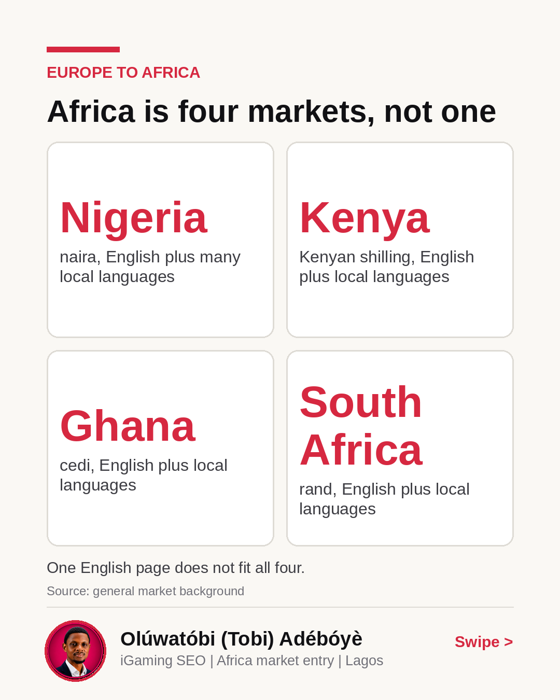
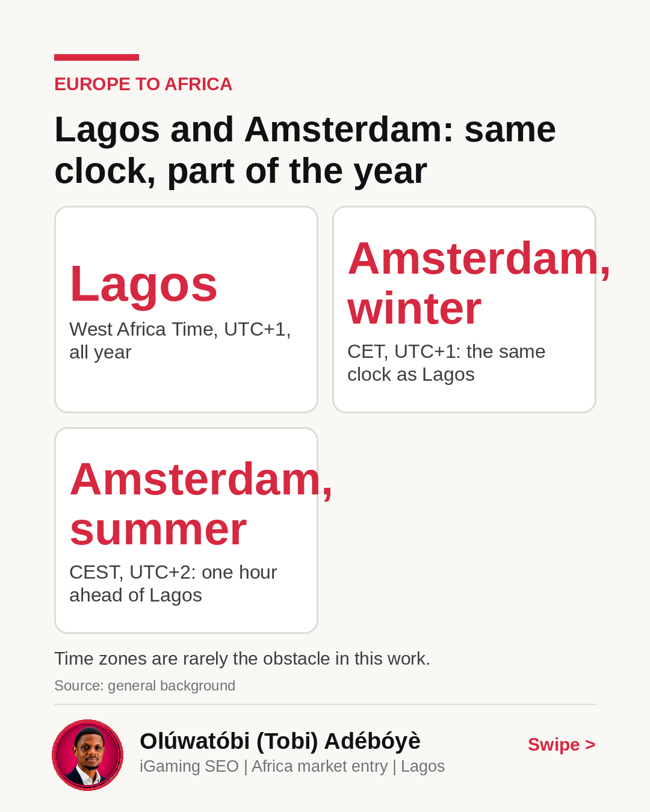

Numbers and maps for entering Africa
The chart on the first slide looked flat for months before the traffic line finally moved.
When I took on a project for a company in the Netherlands, organic sessions sat at about 100 a month. Over 6 months of cleaning backlink profiles and using more than 50 expired domains to rebuild authority, that number went to over 20,000 a month, while Domain Rating moved from 19 to 59.
Swipe through the carousel to see the numbers from my past campaigns, including a hosting industry client that went from 200 to 5,000 weekly organic visitors in 8 months.
What is the biggest bottleneck you see in organic growth right now?
A Netherlands-based company, SEO delivered from Lagos
Remote work across time zones is how I work.

A hosting-industry client, eight months
Slow, boring, compounding work.

Africa is four markets, not one
One English page does not fit all four.

Lagos and Amsterdam: same clock, part of the year
Time zones are rarely the obstacle in this work.
